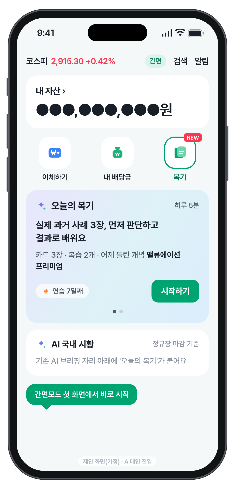
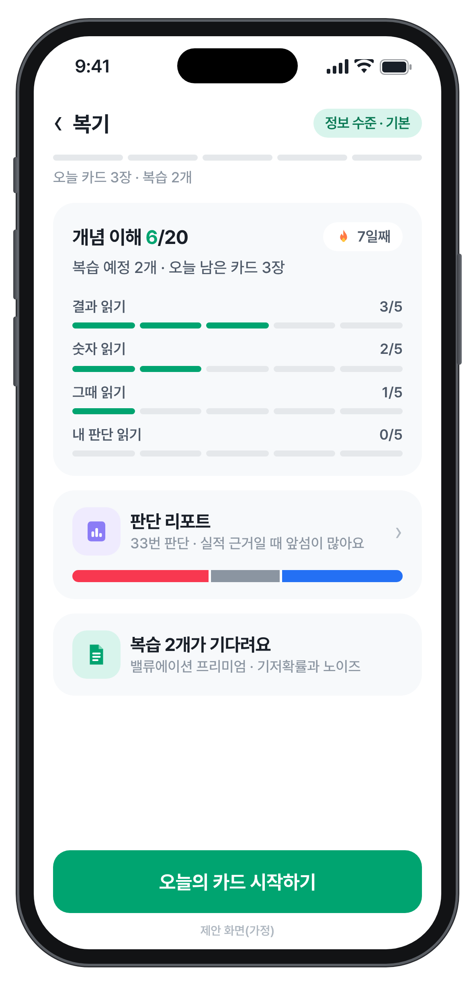
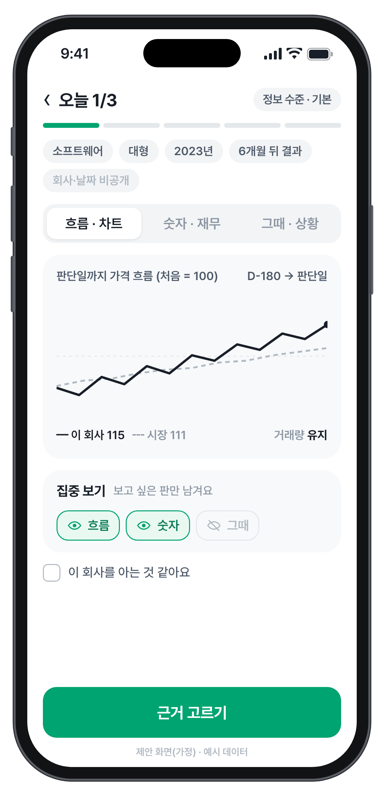
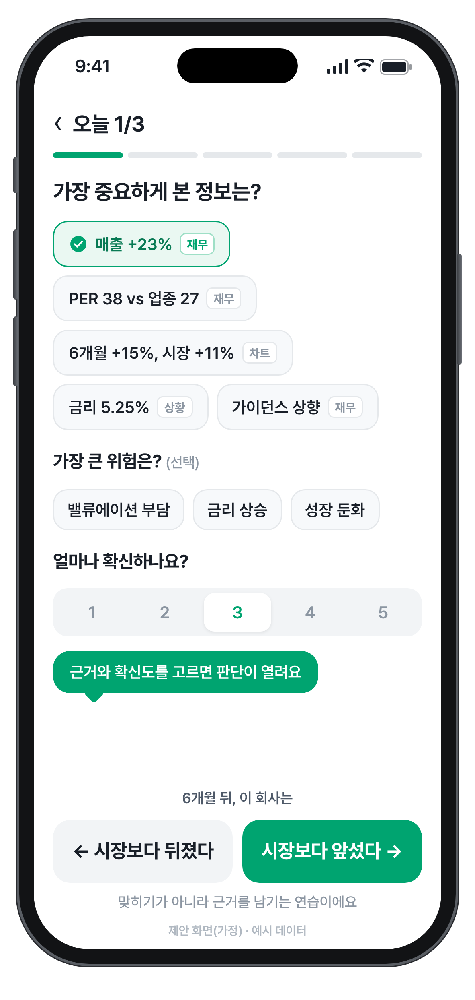
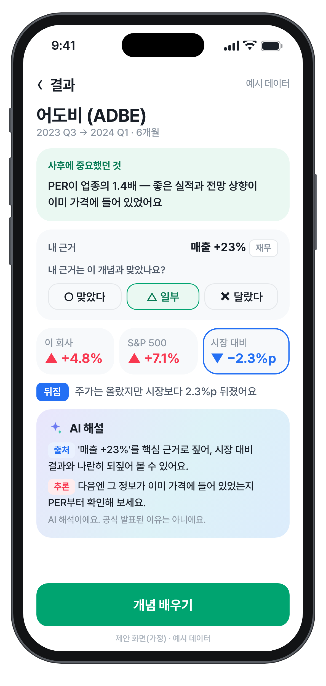
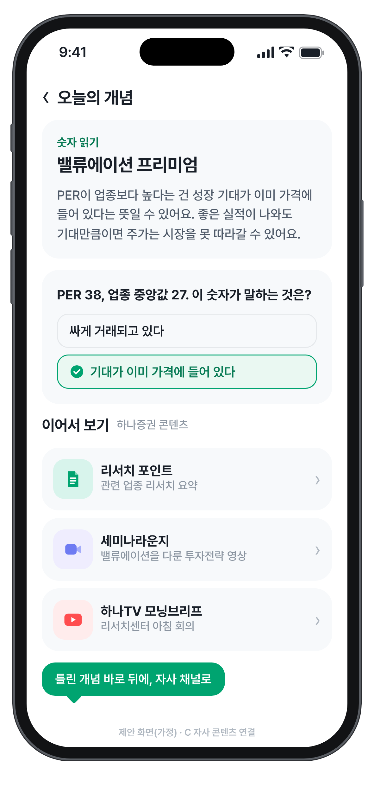

UI/UX 시안 · 하나증권V 디자인 문법 적용(제안)
보고 → 고르고 → 되짚고 → 배운다
간편모드 첫 화면에서 시작하는 하루 5분
한 화면에 한 동작, 카드 3장 + 복습 2개

›
1MTS 홈에서 바로
- AI 시황 카드 자리에 '오늘의 복기'
- 빠른 메뉴에 '복기' 타일(NEW)
- 연습 일수·어제 틀린 개념으로 다시 부름

›
2오늘 할 일 한눈에
- 카드 3칸 + 복습 2칸 진행 띠
- 네 갈래 개념 길(잠금 없음)
- 판단 리포트·복습으로 바로 가기

›
3세 판을 한 카드에
- 흐름(차트)·숫자(재무)·그때(상황) 탭
- 집중 보기: 판을 가려 '차트만'·'실적만'
- 판단 전엔 결과색(빨강·파랑) 없음

›
4근거를 골라야 열림
- 근거 칩마다 출처 판(재무·차트·상황)
- 확신도 1~5, 기본값 없음
- 질문은 '시장보다 앞설까'

5결과보다 근거 먼저
- 중요했던 것 → 내 근거 → 결과 순서
- 앞섬·뒤짐·비슷함(±1%p) 배지
- AI 해설 문장마다 출처·추론
UI/UX 시안 · 회고와 연결
쌓이면 보인다 — 판단 리포트
매매일지를 쓰지 않아도 판단할 때마다 저절로 쌓이는 회고
약점은 복습과 하나증권 콘텐츠로 이어짐
1어디에 집중했을 때 잘됐나근거 유형(실적·차트·상황)별로 시장보다 앞섬·비슷함·뒤짐 횟수를 누적 막대로. 승률 %·순위는 보여 주지 않음
2틀렸다면, 왜뒤진 판단의 공통점을 AI가 한 문장으로("뒤진 12번 중 7번은 차트 흐름만 근거"). 횟수만 쓰고 단정하지 않음
3확신도와 결과확신이 근거보다 앞서는지 뒤처지는지 문장으로 보정
4자주 놓친 개념 → 복습○△✕에서 '달랐다'가 많은 개념을 복습 일정과 자사 콘텐츠로 연결

C틀린 개념 → 자사 콘텐츠
- 리서치 포인트·세미나라운지·하나TV로 이어보기